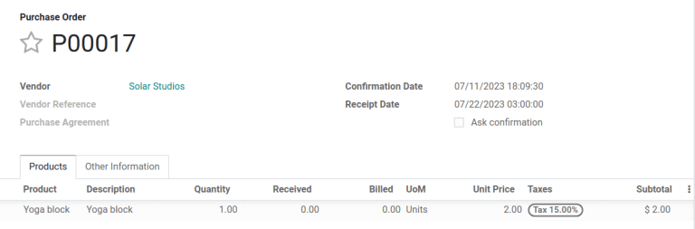
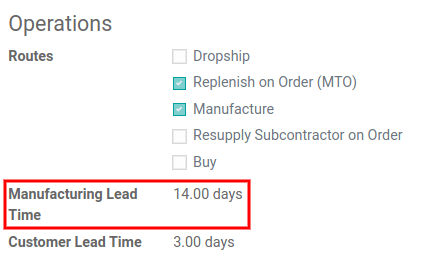
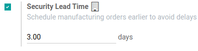

Scheduled delivery dates¶
Accurately forecasting delivery dates is vital for fulfilling customer expectations. In Odoo, the Inventory app allows for comprehensive lead time configuration, allowing coordination and planning of manufacturing orders, deliveries, and receptions.
Lead time types¶
Different lead times for different operations can impact various stages of the order fulfillment process. Here’s a summary of the types of lead times in Odoo:

Customer lead time: The default time frame for fulfilling customer orders. The customer lead time is the number of days from the date the sales order (SO) is confirmed to the date the products are shipped from the warehouse. This is also known as delivery lead time.
Sales security lead time: moves the scheduled delivery date forward by a specified number of days. This serves as a buffer to allow the team ample time to prepare the outgoing shipment earlier, considering the possibility of delays in the fulfillment process.
Purchase lead time: the number of days from the confirmation of a purchase order (PO) to the receipt of products. It provides insight on the time it takes for products to arrive at the warehouse, facilitating effective scheduling and planning of supplier deliveries.
Purchase security lead time: advances the order deadline on a PO by a specified number of days. This proactive approach of placing orders earlier mitigates the risk of vendor or shipping delays. Thus, for products that are set to replenish to order, the need appears on the Replenishment report earlier, according to the specified number of days.
Manufacturing lead time: the number of days needed to complete a manufacturing order (MO) from the date of confirmation. This lead time includes weekends (non-working hours in Odoo), and is used to forecast an approximate production date for a finished good.
Manufacturing security lead time: moves the scheduled date of the MO forward by a specified number of days. When used in conjunction with replenish to order, the security lead time makes the need appear earlier on the replenishment report.
Sales lead times¶
Customer lead times and sales security lead times can be configured to automatically compute an expected delivery date on a SO. The expected delivery date ensures a realistic delivery dates setting for shipments from the warehouse.
Odoo issues a warning message if the set delivery date is earlier than the expected date, as it may not be feasible to fulfill the order by that time, which would impact other warehouse operations.
Example
A SO containing a Coconut-scented candle is confirmed on July 11th. The
product has a customer lead time of 14 days, and the business uses a sales security lead time of
1 day. Based on the lead time inputs, Odoo suggests a delivery date in 15 days, on July 26th.

The following sections demonstrate how to automatically compute expected delivery dates.
Customer lead time¶
Set the customer lead time on each product form, by navigating to the products page. To do so, go to . From there, select the desired product, and switch to the Inventory tab. Then, under the Customer Lead Time field, fill in the number of calendar days required to fulfill the delivery order from start to finish.
Example
Set a 14-day customer lead time for the Coconut-scented candle by navigating to its product
form. Then, in the Inventory tab, type 14.00 days into the Customer Lead
Time field.

Sales security lead time¶
Sales security lead time is set globally for the business in .
On the configuration page, under the Advanced Scheduling heading, locate the box for Security Lead Time for Sales, and click the checkbox to enable the feature.
Next, enter the desired number of calendar days. This security lead time is a buffer notifying the team to prepare for outgoing shipments earlier than the scheduled date.
Example
Setting the Security Lead Time for Sales to 1.00 day, pushes the
Scheduled Date of a delivery order (DO) forward by one day. In that case, if a
product is initially scheduled for delivery on April 6th, but with a one-day security lead time,
the new scheduled date for the delivery order would be April 5th.

Deliver several products¶
For orders that include multiple products with different lead times, the lead times can be configured directly from the quotation itself. On a quotation, click the Other Info tab, and set the Shipping Policy to:
As soon as possible to deliver products as soon as they are ready. The Scheduled Date of the DO is determined by adding today’s date to the shortest lead time among the products in the order.
When all products are ready to wait to fulfill the entire order at once. The Scheduled Date of the DO is determined by adding today’s date to the longest lead time among the products in the order.

Example
In a quotation containing 2 products, Yoga mat and Resistance band, the products have a lead
time of 8 days and 5 days, respectively. Today’s date is April 2nd.
When the Shipping Policy is set to As soon as possible, the scheduled delivery date is 5 days from today: April 7th. On the other hand, selecting When all products are ready configures the scheduled date to be 8 days from today: April 10th.
Purchase lead times¶
Automatically determining the dates on which to place orders from suppliers can help simplify the procurement process.
Odoo calculates the supplier shipment receipt date, and PO deadline, based on the required date the product is needed in the warehouse. By working backwards from the receipt date, vendor lead times and purchase security lead times are taken into account, in order to determine the PO deadline.
This deadline is the date by which the order should be confirmed, in order to ensure timely arrival by the expected receipt date.
Vendor lead time¶
To set a vendor lead time for orders arriving in the warehouse from a vendor location, begin by navigating to a product form through .
Next, select the desired product, and switch to the Purchase tab. In the editable vendor pricelist, click the Add a line button to add vendor details, such as the Vendor name, Price offered for the product, and lastly, the Delivery Lead Time.
Note
Multiple vendors and lead times can be added to the vendor pricelist. The default vendor and lead time selected will be the entry at the top of the list.
Example
On the vendor pricelist of the product form, the Delivery Lead Time for the selected
vendor is set to 10 days.

By setting the vendor lead time, the expected arrival date of the item is automatically determined as the date of the PO confirmation, plus the vendor lead time. This ensures that warehouse employees are notified, if the products do not arrive within the expected timeframe.
Example
On a PO confirmed on July 11th, for a product configured with a 10-day vendor lead time, Odoo automatically sets the Receipt Date to July 21st. The receipt date also appears as the Scheduled Date on the warehouse receipt form, accessible from the Receipt smart button, located on the PO (Purchase Order).

Purchase security lead time¶
Purchase security lead time is set globally for the business in .
On the configuration page, under the Advanced Scheduling heading, locate the box for Security Lead Time for Purchase, and click the checkbox to enable the feature.
Next, enter the desired number of calendar days. By configuring the security lead time, a buffer is set to account for potential delays in supplier deliveries.
Example
Setting the Security Lead Time for Purchase to 2.00 days, pushes the
Scheduled Date of receipt back by one day. In that case, if a product is initially
scheduled to arrive on April 6th, with a two-day security lead time, the new scheduled date for
the receipt would be April 8th.
Manufacturing lead times¶
Lead times can help simplify the procurement process for consumable materials and components used in manufactured products with bills of materials.
The MO deadline, which is the deadline to begin the manufacturing process to complete the product by the scheduled delivery date, can be determined by configuring the manufacturing lead times and manufacturing security lead times.

Manufacturing lead time¶
Configure the manufacturing lead time directly on the product form, by navigating to , and select the desired product.
In the Inventory tab of the product, specify the calendar days needed to the manufacture the product in the Manufacturing Lead Time field.
Example
Specify a 14-day Manufacturing Lead Time for a product directly in the Inventory tab of the product.
Establish a MO deadline, based on the expected delivery date, indicated in the Scheduled Date field of the DO.
The MO deadline, which is the Scheduled Date field on the MO, is calculated as the expected delivery date subtracted by the manufacturing lead time.
This ensures the manufacturing process begins on time, in order to meet the delivery date.
However, it’s important to note that lead times are based on calendar days. Lead times do not consider weekends, holidays, or work center capacity (the number of operations that can be performed at the work center simultaneously).
Example
A product’s scheduled shipment date on the DO is August 15th. The product requires 14 days to manufacture. So, the latest date to start the MO to meet the commitment date is August 1st.
Manufacturing security lead time¶
Manufacturing security lead time is set globally for the business in . Under the Planning heading, locate the box for Security Lead Time, and click the checkbox to enable the feature.
Next, enter the desired number of calendar days. By configuring the security lead time, a buffer is set to account for potential delays in the manufacturing process.
Example
A product has a scheduled shipment date on the DO set for August 15th. The manufacturing lead time is 7 days, and manufacturing security lead time is 3 days. So, the Scheduled Date on the MO reflects the latest date to begin the manufacturing order. In this example, the planned date on the MO is August 5th.
Global example¶
See the following example to understand how all the lead times work together to ensure timely order fulfillment:
Sales security lead time: 1 day
Manufacturing security lead time: 2 days
Manufacturing lead time: 3 days
Purchase security lead time: 1 day
Vendor lead time: 4 days
The customer places an order for a manufactured product on September 1st, and the scheduled delivery date from the warehouse is on September 20th. Odoo uses lead times and automated reordering rules to schedule the necessary operations, based on the outgoing shipment delivery date, September 20th:

September 1st: Sales order created, confirmed by salesperson.
September 9th: Deadline to order components to ensure they arrive in time when manufacturing begins (4-day supplier lead time).
September 13th: Scheduled date of receipt for components. Initially, it was set to 9/14, but the 1-day purchase security lead time pushed the date earlier by 1 day.
September 14th: Deadline to begin manufacturing. Calculated by subtracting the manufacturing lead time of 3 days, and the manufacturing security lead time of 2 days, from the expected delivery date of September 19th.
September 19th: Scheduled Date on the delivery order form indicates the updated expected delivery date, which was originally set as September 20th. But the sales security lead time pushed the date forward by a day.
Odoo’s replenishment planning maps a business’ order fulfillment process, setting pre-determined deadlines and raw material order dates, including buffer days for potential delays. This ensures products are delivered on time.